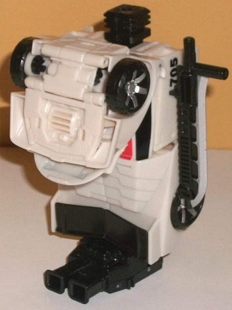

Allegiance
: Autobot
Size
: Deluxe
Difficulty of Transformation to Robot
:
Easy
Difficulty of Transformation to Leg
:
Very Easy
Difficulty of Transformation to Arm
:
Very Easy
Color Scheme
: Off-white, black,
and some silver, moderately light red, moderately light blue, dark metallic
gunmetal gray, and moderately light green
Rating
: 7.2
(NOTE: Because this is a repaint, this is not a full-blown review. This mainly covers any changes made to the mold and the color scheme, and merely compares it to Combiner Wars Breakdown. For a review on the mold itself, read the review of Combiner Wars Breakdown here .)
Wheeljack is another
one of the Combiner Wars toys-- such as
Streetwise
--
that uses the same basic mold, transformation, and many of the "core" parts
as a previous release in the line, but has had the vehicle mode (and parts
of the robot mode) reshelled with new details. In vehicle mode, Wheeljack
takes the form of a sportscar considerably similar to his own G1 form,
complete with a spoiler, a tapered-down "rear windshield", an extended
grill and vent lines on the front, and a more circular and rounded middle
section and windows. That said, Wheeljack's modified parts don't quite
"fit together" as easily as any interations of the CW Breakdown mold did--
there's a bit of an obvious gap in between the doors and rear third or
so of this mode, made all the more obvious because Wheeljack is mostly
white. The robot chest-- which connects to the underside of the front section--
also doesn't peg in as solidly/easily as on the Breakdown mold. All this
said, the amount of molded detail on Wheeljack DOES surpass Breakdown's
in this mode, which is certainly appreciated-- a sleek sportscar that still
has a good amount of mold detailing on it is a rarity. As for colors, Wheeljack
sticks to his G1 scheme rather closely, being mostly off-white and black.
By itself this would be a pretty dull color scheme, but thankfully in this
mode Wheeljack has a decent amount of red and light green stripes to help
give him some color, both on the front hood, the top hood of the car, and
green lines near the bottom of the car doors. The green is a bit lighter
in shade than on Wheeljack's G1 toy, but that's about the only major color
differentiation, here. I did like the dark green better as it provided
more contrast, but the light green still looks pretty good against both
the red and the off-white. There is the distinctive loss of a lot of decals,
though the "705"s on the car doors are still here. There's also some silver
on Wheeljack's wheel hubs and sword. Still, some more paint would've been
appreciated here and there, like perhaps some silver on the front grill
or on the rear tapered windshield, since there's no paint for the front
or rear bumpers/headlights/taillights at all.

In robot mode, Wheeljack
has a new headsculpt (of course), along with a remolded robot chest, lower
legs, and arms (though the latter are mostly remolded so that they fit
with the vehicle mode lines). Wheeljack's headsculpt is spot-on, with a
silver faceplate and side "ears", a nice metallic gunmetal gray head, and
some nice blue eyes that really pop against both colors. The remolded chest
now more closely resembles G1 Wheeljack's chest, which was his car hood.
The "car hood" here is completely fake, though, and although there's a
bit of red and green paint detailing, it's not detailed like the lines
in those same places in the car mode, which is kind of odd. The windows
on the chest are also completely unpainted-- one of the most egregious
missing apps on the toy, as white windows on a white car just looks very
bland. In fact, this mode in general is definitely quite bereft of paint
apps, with there being some nice red/green paint apps on the lower legs,
but otherwise there being NO robot mode-specific paint apps beyond those
already mentioned on the head and chest. The bland off-white arms and waist
badly need some color, and the black upper legs just don't provide enough
contrast to the mode to help even out this downside.
Combiner Wars Wheeljack
is an inventive remolding of the Breakdown mold-- and the car mode mold
details are fairly impressive-- but overall, this just doesn't cut it as
a new Wheeljack. He is really missing a lot of paint-- particularly in
robot mode-- and the odd Breakdown robot mode proportions don't do Wheeljack
any favors. The fact that his car mode doesn't peg together as well as
Breakdown's is another annoyance. Given all this and the already relative
weakness of this mold, Wheeljack is pretty much my least favorite Combiner
Wars deluxe. I'd recommend getting the
original
Generations version
if you can get it for a remotely reasonable price.
Pre-mission psych-screening report
by Rung, Autobot Psy-Ops Specialist:
Wheeljack was onboard the Autobot Ark
that initially crashed on Earth. Equal parts medic and inventor, he has
produced countless scientific advances in his lab. Enterprising and outgoing,
he's always one of the most popular Autobots. Wheeljack used his ingenuity
to create an upgraded form for a young Orion Pax, giving him the strength
and size that would become the trademarks of the future Optimus Prime.
His best invention is a near-impenetrable faceplate, which has come in
handy when volatile prototype inventions have literally exploded in his
face. In combat, his dual cannons fire shrapnel-needle shells while his
seismic blade wards off enemies.
CONCLUSION: Cleared for mission.
HISTORY (extracted from compulsory
biographical download):
Wheeljack has come a long way since
joining the Autobot forces fresh out of Ultirex Technoversity on Cybertron.
His ingenuity helped rebuild the Aerialbots, and his Combiner knowledge
made him a prime candidate for a Combiner team as well. Forms either an
arm or a leg of Sky Reign, the new combined form of Sky Lynx.
Review by Beastbot